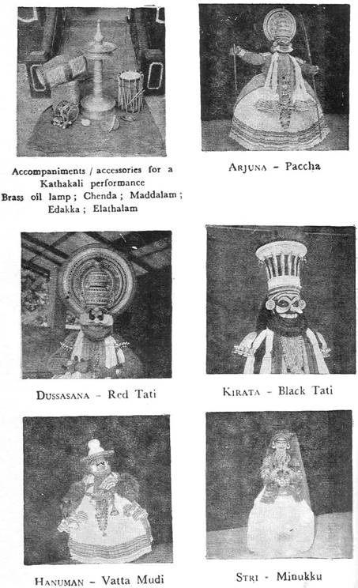

KATHAKALI
M.
K. K. NAYAR

Today
most people know that Kathakali,
Like miracle plays of
Another
interesting factor that played its part in the evolution of Kathakali
was the tradition of the gymnasia known as Kalaries
in Kerala. The Kalari was a place confined to
military training including physical combat. The Nayars
of Kerala were a fighting class although they were both chieftains and farmers
alike. Their main stay however was soldiering. The Kalaries
provided the training with the advent of the Aryan element into Kerala, Brahmins also took part in the exercises in the
gymnasia. Some of them became teachers too. As the Brahmins had the
ability to convert anything into a religious ritual or to provide anything with
a religious aura, the Kalari celebrations soon took a
religious turn. Thus arose what was called the Sangha
Kali (also called Sashtra Kali, Chatura
Kali, Satra Kali or Yatra
Kali). Though the festivities closed with the display of combatant techniques,
they all began with ritual worship, recital of narrative poems on the chosen diety and a few comic interludes. Comic characters were
considered essential to break the possible monotony in sequences. The Kalari thus gave rise to a form of drama which combined
both physical display and intellectual relaxation. Gradually two distinct
forms were evolved, the comedy and the dance drama. Comedy
no doubt contained a good percentage of satire.
Another
important art form that contributed to the making of Kathakali was the Kudiattam. Again we do not know how old Kudiattam
is. Chilappathikaram, the famous Tamil epic written
by Elankovan, brother of Cheran
Chenkuttavan, the Chera
emperor of the second century A. D., who ruled from his headquarters within a
few miles of the present Cochin Port, described in detail the performance of Kudiattam and Chakiar Koothu then prevalent in Kerala. One could not say
definitely which was older–Kudiattam or the Chakkiar Koothu. The elite of
Kerala at that time were well-versed in Sanskrit. The drama attracted them. To
enact Sanskrit drama a group of people with histrionic talent was selected. The
performance given by the group was called Kudiattam.
It might be of interest to know that even in those days Kudiattam
was performed by both men and women. The particular sect who performed
these dramas were called Chakiars
and the women Nangyars.
Chakiars were specially trained to portray different
roles with enviable effect. Talented men among them used to give mono-act
performances. Such performances were called Chaklar Koothu.
The
Chakiar Koothu was
dominated essentially by the comic spirit. The Chakiar
had great licence to ridicule contemporary society.
Even kings were not exempt. The convention was that if any member of the
audience spoke in protest of the Chakiar’s innuendos,
he walked out of the stage. Chakiar Koothu is popular even today. It is usually performed in
temples. Chakiars are great masters of histrionic
art. They are veterans in Abhinaya.
As
the centuries rolled by, Jayadeva’s Geetha Govinda became
a popular poem in Kerala. The Zamorin of Calicut, a powerful king who managed the affairs of the
famous Guruvayur temple devoted to Lord Krishna, was enamoured of Geetha Govinda. He insisted on Geetha
Govinda being recited in the Guruvayur
temple every day. Some devoted Nambudiri Brahmins in Guruvayur listening to this ecstatic music conceived of a
dance drama based on it. This dance drama known as Krishnattam–in
other words the dance of Krishna–became very popular in that area.
The
origin of Kathakali is shrouded in folklore. The poem written for Kathakali is
attributed to the Rajah of Kottarakara a
small chieftain in
The
first major event that happened in the history of Kathakali after the creation of
Ramanattam by the Rajah of Kottarakara
was the emergence of a great scholar, the Rajah of Kottayam
in
It
is not necessary to go into the various stages of development of Kathakali
after the days of the Rajah of Kottayam. It is enough
to mention two significant events in the history of Kathakali to bring one
up-to-date. The first relates to the period when a versatile artist called Kaplingad Nambudripad who lived
towards the end of the 18th century, worked for a few years under the
supervision and guidance of Maharaja Karthika Thirunal of Travancore to improve
the costumes and make-up employed in Kathakali to make them attractive and, at
the same time, unearthly. He introduced various reforms in the methods of
presentation of characters and set the proper perspective for the creative
artist. The second major event took place only 40 years ago when the great poet
Vallathol established the Kerala Kalamandalam,
the
Kathakali
is a marvel of perfection in which detail upon detail is added, each
complementing the other and fits into the whole with organic naturalness and
exact balance. It opens with a festive gusto of relentless drumming and song
accompanied by loud musical instruments, making the whole atmosphere ring with
a wierd sound transporting the audience to a
different world of rythm and fantasy. Essentially
based on sage Bharatha’s Natya
Sastra yet developed into much more meticulous
detail, Kathakali is a highly specialised art, its specialisation permeating every aspect of it with the same
uncompromising intensity and superb finish.
Kathakali
combines in it both the Thandava and
the Lasya styles of dancing. Yet it is
essentially a masculine performance. Intensive and ruthless, training for a
period of a dozen years or more enables the artist to bring under perfect
control every part of his body solely for the sake of aesthetic expression. His
eyes are ever vibrant; his facial muscles eloquent; his finger tips creative;
and his whole person the very embodiment of rhythm. The story of the dance
drama is related by the actor by gestures and with the aid of Hasthalakshanas (popularly known as Mudras), as the musicians sing the slokas and the padas. Bharatha taboos theatrical exhibition of battle scenes and
blood-letting. But in Kathakali nothing is taboo. Marriages take place on the
stage; battles are fought; entrails are pulled out. The most beautiful and the
most grotesque are presented with equal dexterity.
Kathakali
is the visual presentation of mythological characters. The costumes and
make-up are therefore designed to create the necessary appeal. The facial
make-up might give an impression that masks are used. In Greek dramas and
Chinese and Japanese plays masks are used extensively. When one uses a mask one
cannot express an emotion on the face. The Kathakali make-up is different
because the whole face is painted over–the lips, eye-brows
and eye-lashes emphasised. The differential make-up
is luminously clear in its typological indications. One could compare the
make-up in a distant manner to the mask of a Japanese Noh play actor. The mask
employed by the Japanese and the Chinese does not permit the
face its rich expressive mobility. But in a Kathakali character the contour of
the face is clearly demarcated by a white thin fringe called the Chutti which frames it effectively making the face a stage
for the inner spirit. The tumult or the tranquility within,
find immediate expression in the mobile features with no mask to conceal them.
Make-up
alone takes about three to four hours for a Kathakali actor. The make-up and
costume also determine the character portrayed. For this
purpose mythological characters are classed into different categories. The
first in the order of precedence is the Dhirodatta,
the noble-hearted, upright hero. The costume known as Paccha
(face painted in green) is allotted to such characters. Examples are the Devas (Indra), noble kings like Nala, Yudhishtira, Rukmangada, Arjuna and Bheemasena. All characters who don Paccha
also wear Kiritas (headgear); but when
it comes to
Kathi, another prominent
costume of Kathakali, is devoted to Prathinayakas
or heroes who are classed under the term Dhirodhata.
The costume in general is similar to Paccha. The
facial make-up is different. A knife-shaped pattern is drawn on either cheek in
red pigment over the normal Paccha make-up. In
addition, a small ball called Chuttippoo is
fixed on the tip of the nose and another one in the centre of the forehead. Kathi represents Rajasa
Guna and is the costume of characters like Ravana, Kamsa,
Jara. sandha and Duryodhana. Kathi can be said to denote a combination of royalty and
evil. Kings of Rakshasas like Ravana or Rakshasas among kings like Kamsa
are depicted in Kathi. Also villains like Kichaka. Whereas Paccha
characters do not open their mouth or create any noise, Kathi
characters are permitted to make weird noises appropriate to the occasion or to
the emotion expressed.
The
costume that represents Thamoguna or Thamas is Tati. Tati means beard. There are red, black and white Taties, each depicting a type of Thamoguna.
Red Tati has the face painted in a frightening
dark pattern and wears an impressive red beard. The headgear is round in shape
and much larger in size than the Kiritas worn
by Paccha or Kathi. On the
tip of the nose and on the forehead Tati costumes
wear Chuttippoos of a much bigger size
than those worn by Kathi. Red Tati
is usually given to extremely wicked characters like Rakshasas
or despicable men like Dussasana. Examples are
Bakasura and Murasura. The
concept of the red Tati is one of a destructive evil
force with little or no thinking faculty. The costume has therefore been
extended to portray roles like Sudarsana
Chakra and Veerabhadra. The Sudarsana
Chakra is the all-powerful weapon of Vishnu. Annihilation without thought
is its motto. So also Veerabhadra
who is born out of the ire of Siva, is nothing but an agency for
destruction and blind obedience.
A
further extension of the Tati costume is its
application to the monkey kings like
The
black Tati or black beard is a costume given to a
character like Kali in Nalacharita. The character
depicted is as evil as the red Tati, but has the
subtle distinction that it denotes also a treacherous schemer. The make-up is
similar to red Tati, the beard alone being black in colour.
Tati or white beard is a
further refinement of the Tati group of characters. A
good example is Sakuni, the notorious uncle of the Kauravas, who is an arch schemer with no scruples but no physical prowess either. The make-up is simpler than in
red Tati. Even the usual chutti
is omitted and a white beard worn.
All
bearded characters are permitted to make noises appropriate to the occasion. Sometimes
this may amount to loud roaring.
Another
costume very popular In Kathakali is Kari. It is an all-black costume with the
face painted in black and the jackets and skirts blacker. The headgear is
primitive. This costume i. used for depicting the lowest
primitive human being; both man and woman. The noises they produce can almost
amount to howling. The characters portrayed in this costume are Kiratas (Chantalas)
and demonesses like Surpanakha
or Tataka.
The
make-up used for gentle characters is Minukku. It
consists of a mere painting of the face with a yellowish orange pigment. There
is no chutti; no elaborate clothing as
in other characters. Stri (woman), Rishi and Brahmanas appear in Minukku.
Other characters who appear with such make-up are charioteers and mrssengers.
Stories of Kathakali are written in the form of Attakathas in Malayalam and consists
of slokas constituting the narrative
portion padas, the dialogue. These are
set to music in appropriate ragas and the musician sings them to the
accompaniment of the drums and cymbals.
The
stage used in Kathakali is the simplest imaginable. The only equipment needed
on the stage is a huge coconut oil lamp towards which all movements converge.
The curtain used is a small rectangular piece of cloth called Tirassila. The drums used are the Chenta and the Maddala. The Chenta is not used during lasya.
The other musical accompaniments used are the Chengila
and
Ilatala. Almost all the stories that appear on the
Kathakali stage are from the two great Hindu epics, the Mahabharata and
the Ramayana.
In
truly traditional style Kathakali is played throughout the night in the open
air. It starts in the evening with Kelikottu,
the formal announcement when all the drums and cymbals are played in the
courtyard for a while. At about 9 P. M. the Maddala
is played for a short while in front of the oil lamp. This is followed by Totaya when one or two players perform an invocational piece. After this the musicians sing the first
sloka of the story of the night. This is
followed by purappadu This is reckoned as a formality–a formal darsan
of the Lord and His Consort or the presentation of the hero. At the end of
this, the musicians and drummers take the opportunity to entertain the
audience with the nuances of their art. This interregnum is called the Melappada. After the Melappada,
the story begins.
When
characters in costumes other than Paccha or Minukku make their debut, they follow a formality called Tiranokku. A literal, though incorrect,
translation of this word is “curtain-look”. The word debut conveys its meaning
in a more exact manner. The character stands behind the Tirassila
very close to the lamp and to the accompaniment of the drums and
cymbals slowly brings the Tirassila down
so that the audience can have a good look at the character and make-up for a
few steady moments. It started in the old days as a convention to draw the
attention of the spectators to the arrival of a powerful
character and to enable the audience to appreciate the
elaborate make-up employed so that they could get a
proper mental picture of the character depicted. It has come to
stay as an inevitable formality and helps create the necessary tempo required
when a powerful character makes his or her debut.
One
of the unique features of a Kathakali performance is what is called Ilakiattam. The term is used to distinguish
it from Cholliattam. Chollattam
means dancing to the words sung by the musician. The musician can sing only
what is written in the poem. When the artists dance to express the
meaning of the slokas and the padas sung by the musician it is Cholliattam. At the end of it one should
normally expect the curtain. But the curtain does not fall so soon in
Kathakali. The characters continue to converse with each other by
the use of gestures and hasthalakshanas. Depending
upon the talent and standing of the artist on the stage this conversation can
occupy anything from five minutes to a few hours. This is the occasion when the
artist gets an opportunity to use his Manodharma
(creative imagination). An artist of high calibre
can make the scene most effective and delightful. The converse is also true.
Traditions and conventions have determined the occasions when Ilakiattam could be elaborate. Instances are
numerous. Just to cite an example: The story is Bali Vijaya
in which Ravana at the instigation of Narada goes to
A
traditional Kathakali performance runs through the night and the Mangala Sloka is
sung with the dawn.